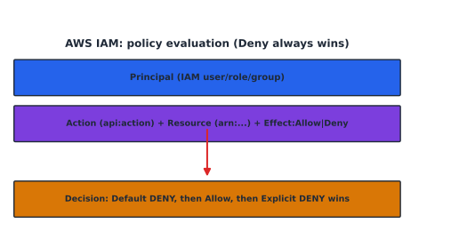

Identity, Access Management, and Governance#
Learning Objectives#
Distinguish authentication, authorization, accounting (AAA).
Apply the Principle of Least Privilege.
Explain Role-Based Access Control.
Administer AWS IAM (users, groups, roles, policies).
Use Multi-Factor Authentication (MFA).
Principle of Least Privilege#
Grant only the permissions necessary to perform a task — nothing more.
Controls:
Deny by default; grant minimum rights.
Separate duties — no one identity does everything.
Prefer roles over users, short-lived credentials over long-lived keys.
Least privilege limits blast radius: a compromised admin can only do what you already allowed.
Role-Based Access Control (RBAC)#
RBAC binds permissions to roles (named job functions); users get roles.
Users → Roles (Job function) → Permissions → Resources
Decision basis |
Example |
|---|---|
RBAC |
Developer role gets |
ABAC |
Grant |
Benefits: fewer per-user policy edits, easier audits, consistent segregation of duties.
AWS IAM#
AWS IAM manages who can do what: users, groups, roles, policies (JSON), and Identity Center (SSO). IAM is global.
Policy evaluation (decision order)#
Default Deny
If an explicit Allow matches → Allow
If an explicit Deny matches → Deny wins (most-specific)
{kind=link}

Fig. 7 Policy evaluation: default deny, then allow, then explicit deny wins.#
Minimal example#
{
"Version": "2012-10-17",
"Statement": [{
"Effect": "Allow",
"Action": "s3:GetObject",
"Resource": "arn:aws:s3:::my-bucket/*"
}]
}
IAM entities#
Entity |
Use |
|---|---|
User |
long-term identity (prefer roles) |
Group |
collection of users (policy attached to group) |
Role |
assumable, temporary credentials (EC2, cross-account) |
Policy |
JSON allow/deny statements |
Best practice: don’t hardcode keys — use an instance profile role for EC2; enable MFA on root and on privileged users.
Multi-Factor Authentication#
MFA requires two or more factors → far harder to compromise than a password alone.
Virtual (authenticator app TOTP), hardware (YubiKey/FIDO2), SMS (weakest — avoid for critical).
Enforce via IAM policy
Condition: aws:MultiFactorAuthPresent == true.
# Example: require MFA to stop/terminate EC2 in an IAM policy
Tip
Mandatory MFA on the root account, privileged users, and break-glass access.
Checkpoint#
Q1. What HTTP header carries a SAML assertion (IdP→SP) in SSO?
Answer. SAML assertions are exchanged (often POSTed in an HTML form); conceptually it is an authentication statement granting access — the key idea: the IdP vouches identity to the SP.
Q2. In the IAM policy evaluation order, when does an explicit Deny win?
Answer. An explicit Deny always wins over any Allow, evaluated after the Allow step.
Q3. What does “least privilege” look like for an EC2 instance that only reads an S3 bucket?
Answer. Attach a role with a policy Action: s3:GetObject(s3:ListBucket) on that bucket ARN,
no write actions, and no broader scope.
Q4. Name an AWS service that gives temporary credentials when assumed.
Answer. An IAM role (e.g., an instance profile) returns temporary STS credentials on AssumeRole.
Q5. Why is MFA stronger than a password alone in terms of factors?
Answer. It adds a second factor class (something-you-have), so stealing the password is no longer sufficient.
Sources#
The concepts in this chapter are summarized from the following authoritative sources:
AWS IAM User Guide: https://docs.aws.amazon.com/IAM/latest/UserGuide/
NIST Digital Identity Guidelines (SP 800-63B): https://pages.nist.gov/800-63-3/
ITIL 4 guidance: https://www.axelos.com/best-practice-solutions/framework/itil